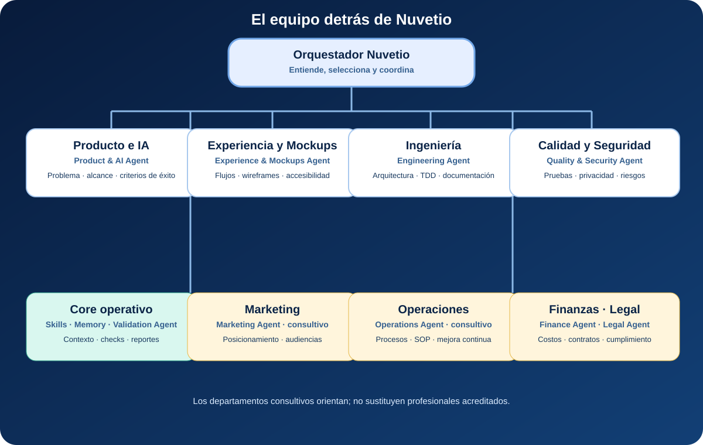

Transforma ideas generales en objetivos y entregables claros.
De una pregunta a un resultado profesional
Ayuda a desarrollar productos y funcionalidades con inteligencia artificial.
Diseña flujos, pantallas, wireframes y mockups.
Organiza arquitectura, tareas y planes de implementación.
Incorpora pruebas, calidad, seguridad y revisión de riesgos.
Mejora tus resultados sin obligarte a aprender prompting avanzado.
El equipo detrás de Nuvetio
Un orquestador. Departamentos especializados. Un resultado profesional.
No necesitas saber de inteligencia artificial. El orquestador de Nuvetio entiende tu pregunta y reúne las perspectivas profesionales que necesita.
Orquestador NuvetioEntiende tu necesidad, elige los departamentos adecuados y coordina el resultado.
01
Departamento de Ingeniería
Engineering Agent
- Arquitectura y planificación
- Implementación y TDD
- Debugging, code review y documentación
02
Departamento de Producto e IA
Product & AI Agent
- Problema, objetivo y alcance
- Oportunidades de IA y datos
- Riesgos y criterios de éxito
03
Departamento de Experiencia
Experience & Mockups Agent
- Flujos de usuario
- Pantallas y wireframes
- Mockups, errores y accesibilidad
04
Departamento de Calidad y Seguridad
Quality & Security Agent
- Pruebas y regresiones
- Privacidad y seguridad
- Preparación del lanzamiento
Core operativoSkillsMCPMemoriaValidación
Resultado profesionalUna respuesta clara, un diseño, un plan y próximos pasos accionables.
Departamentos consultivosMarketingOperacionesFinanzasLegalEstos departamentos entregan análisis guiado y declaran sus límites profesionales.
Ver el diagrama con nombres y funciones

Comienza en cuatro pasos
- Descarga el instalador de Nuvetio 0.4.0 para Windows o Mac desde esta página.
- Abre el archivo y sigue los pasos Siguiente, Instalar y Finalizar. Puede aparecer una advertencia porque todavía no está firmado.
- Confirma cuando la ventana indique que Nuvetio quedó instalado. No debes pegar comandos.
- Elige Codex o Claude Code, abre una sesión nueva y escribe tu consulta normalmente. Agent Skills es opcional. El video de presentación está pendiente para una versión posterior.
Úsalo para crear y mejorar
“Tengo una idea para un producto con IA. Ayúdame a definirlo y encontrar el primer paso.”
“Diseña el flujo y un mockup inicial para esta experiencia.”
“Analiza este problema del negocio y prepara un plan profesional para resolverlo.”
Un ejemplo
Tengo una idea para crear un asistente con IA que ayude a nuestros clientes, pero no sé cómo diseñarlo.
Nuvetio aclara el problema y el usuario, evalúa dónde aporta valor la IA, propone el flujo y las funcionalidades, desarrolla el concepto de las pantallas, revisa privacidad y seguridad, y prepara un plan con pruebas y criterios de éxito.